大模型应用开发 · RAG
RAG：检索增强生成
把知识库、分块、向量化、检索、重排、上下文注入和引用验证串成一条可运营链路。
文章待补充从 RAG、Prompt、结构化输出到 Agent 运行、人审和产品体验，聚焦把模型能力做成可用产品。
四条线拆分成独立页面，当前页面只展示“大模型应用开发”专题内的完整图解。
从 RAG、Prompt、结构化输出到 Agent 运行、人审和产品体验，聚焦把模型能力做成可用产品。
把模型网关、协议、安全、向量库、可观测、训练基础设施、模型服务和 LLMOps 作为生产底座来整理。
从模型骨架、推理优化、KV Cache、调度、投机解码、量化到长上下文，关注延迟、吞吐、成本和质量取舍。
围绕 Tokenizer、学习范式、数据治理、预训练、监督微调、偏好对齐和蒸馏，解释模型能力如何被训练出来。
从 RAG、Prompt、结构化输出到 Agent 运行、人审和产品体验，聚焦把模型能力做成可用产品。
把知识库、分块、向量化、检索、重排、上下文注入和引用验证串成一条可运营链路。
文章待补充
梳理 Query Rewrite、Hybrid Search、Rerank、GraphRAG、权限过滤、RAG Eval 和反馈闭环。
文章待补充
从角色设定、任务拆解、上下文边界、few-shot 示例、输出格式、反例约束和迭代评测理解高质量指令设计。
文章待补充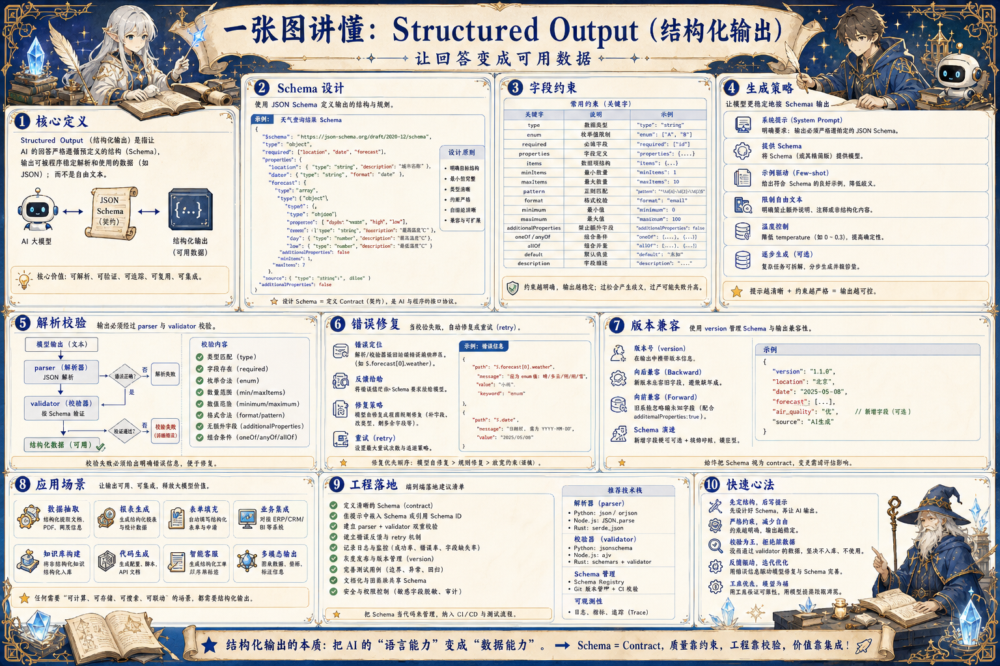
把字段设计、类型约束、枚举、嵌套对象、解析校验、失败修复和版本兼容串成模型输出契约。
文章待补充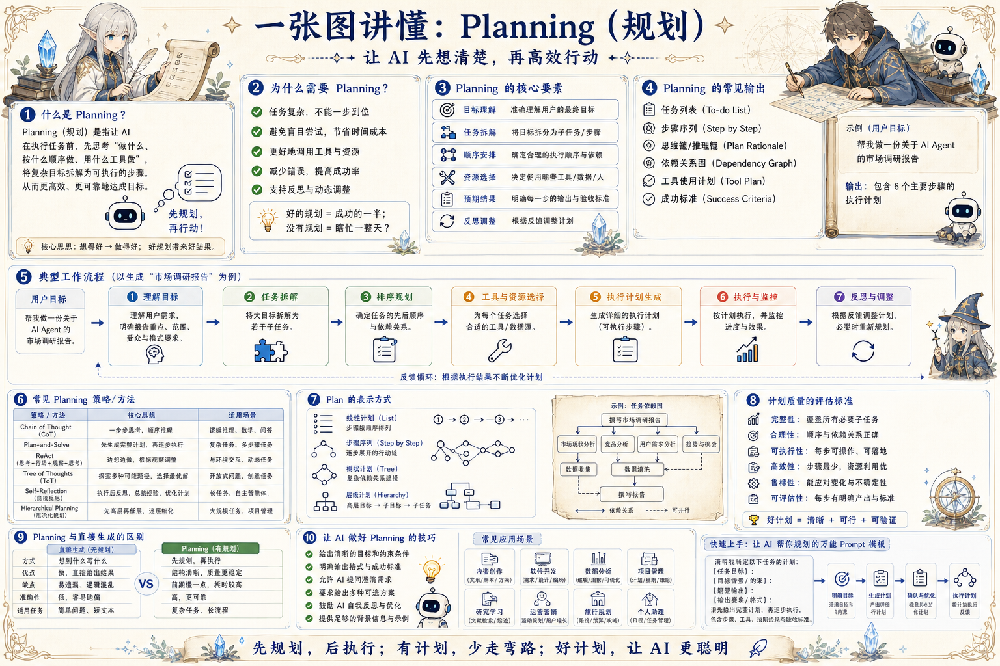
从目标澄清、任务拆解、依赖排序、工具选择、执行监控到反思迭代，形成稳定行动闭环。
文章待补充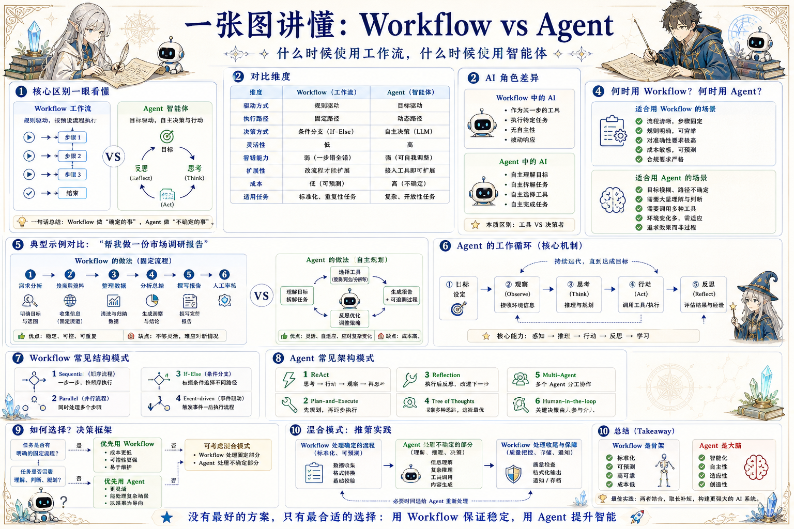
从驱动方式、执行路径、可靠性、可观测、人审边界和混合架构判断系统应该怎么设计。
文章待补充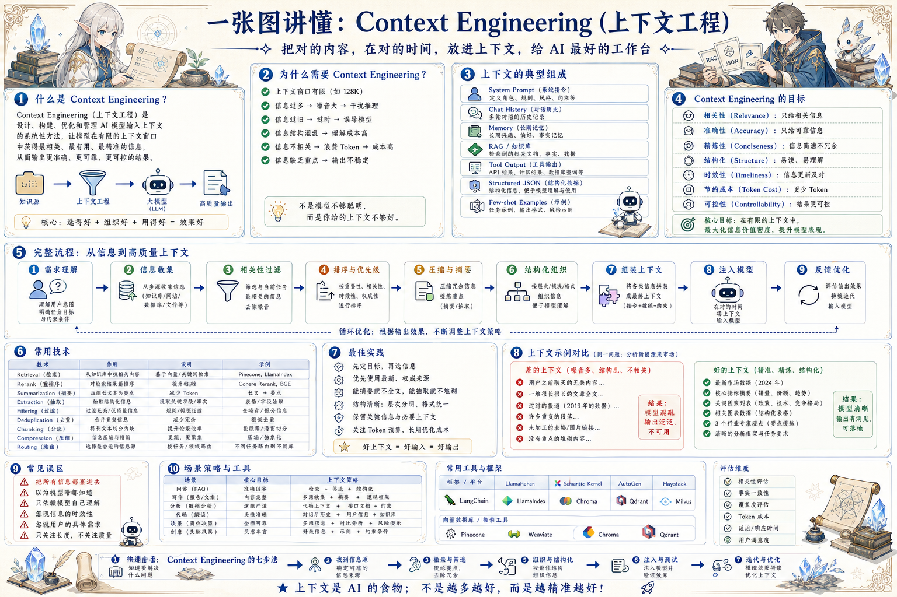
围绕任务意图、信息源、记忆、RAG、工具输出、格式约束和反馈优化设计模型工作台。
文章待补充从任务入口、流式状态、证据展示、人工接管、审批确认、错误恢复和信任建立设计 AI 产品体验。
文章待补充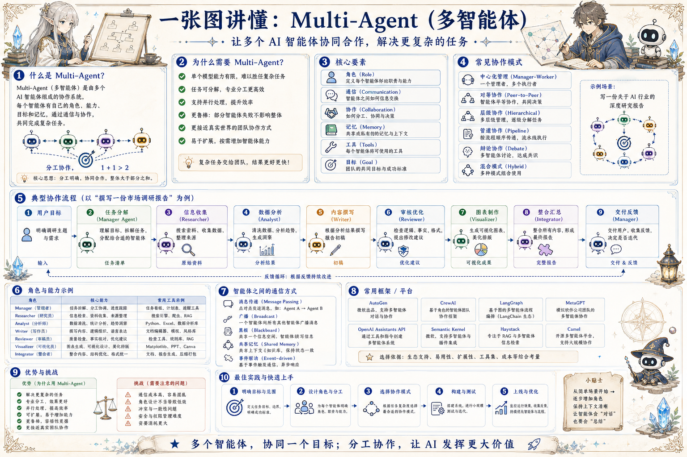
把角色、通信、共享记忆、任务交接、冲突处理、结果整合和人类介入设计成可控协作系统。
文章待补充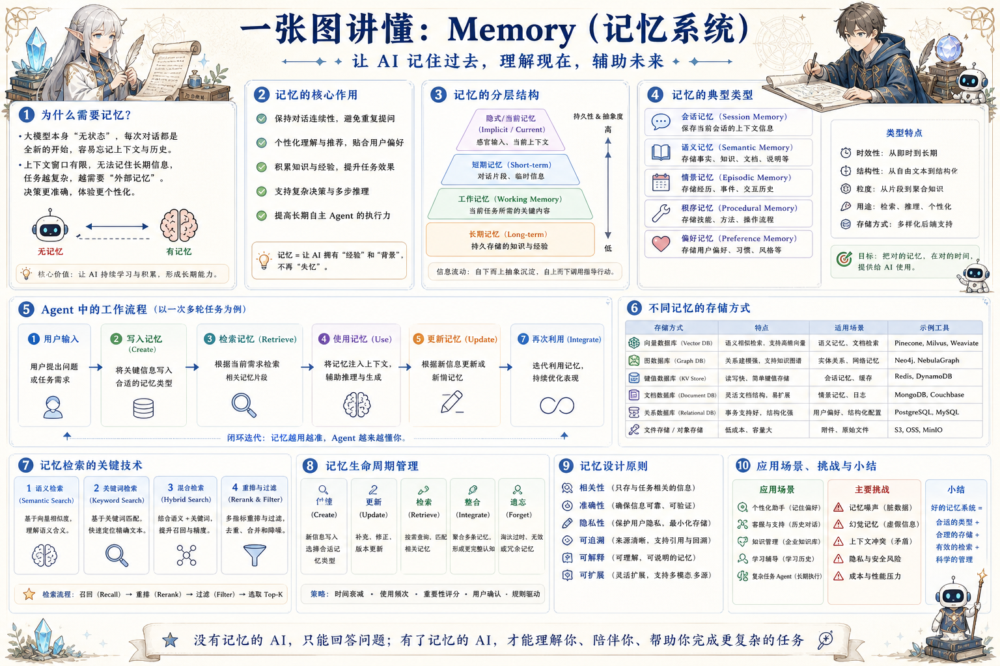
从记忆类型、检索策略、生命周期、隐私安全和可解释性设计长期可用的 Agent 记忆。
文章待补充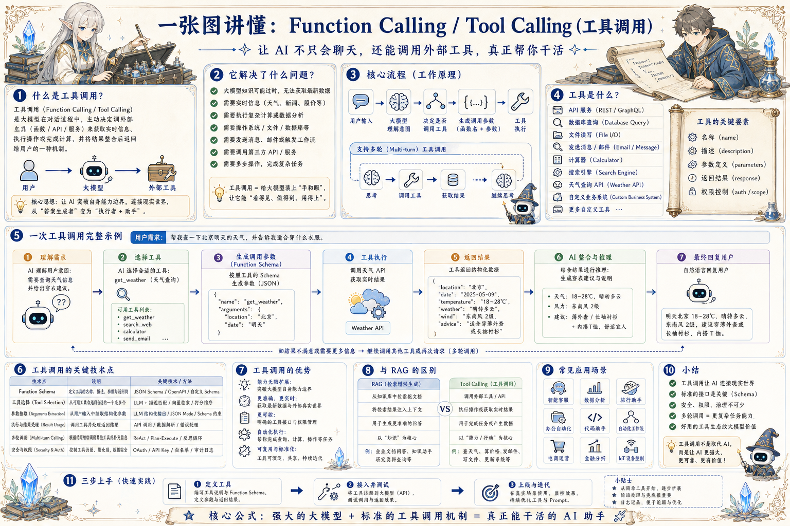
把用户意图、函数描述、参数 Schema、工具执行、结果回填、错误恢复和安全权限串起来。
文章待补充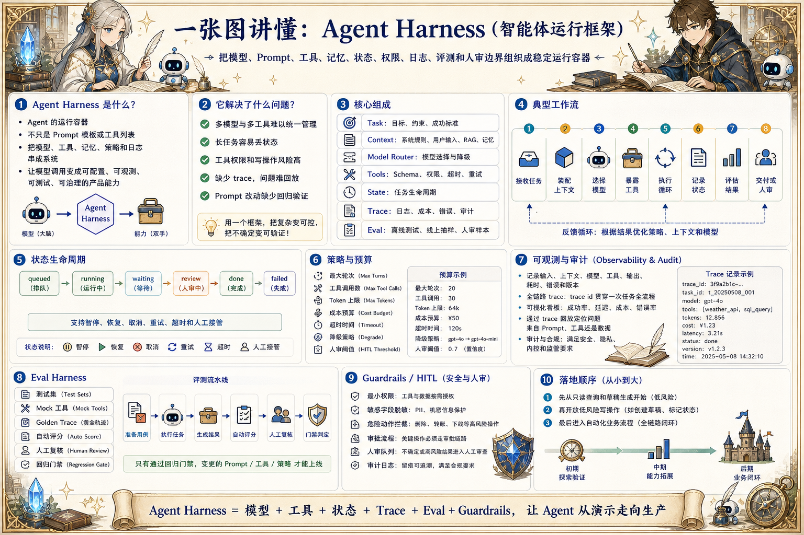
把模型、Prompt、工具、记忆、状态、权限、日志、评测和人审边界包成可运行容器。
文章待补充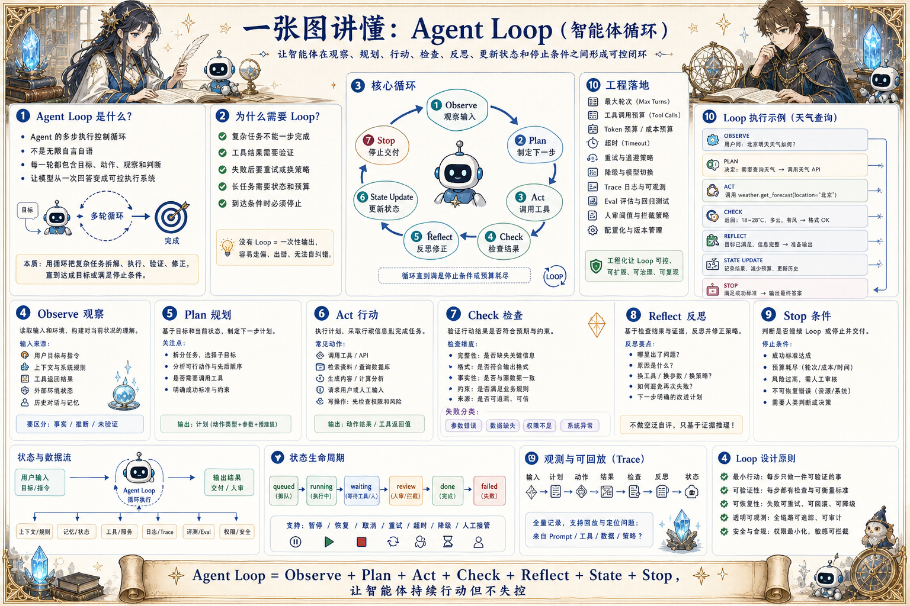
把观察、规划、行动、检查、反思、状态更新和停止条件做成可控执行闭环。
文章待补充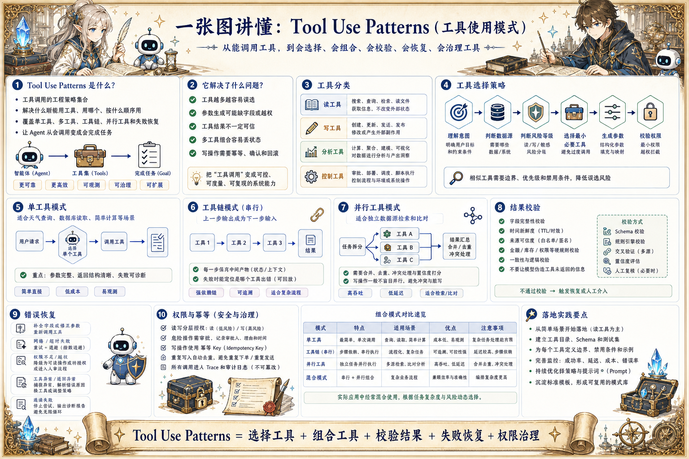
从单工具、多工具、并行调用、工具链、结果校验、重试、幂等和权限看工具使用策略。
文章待补充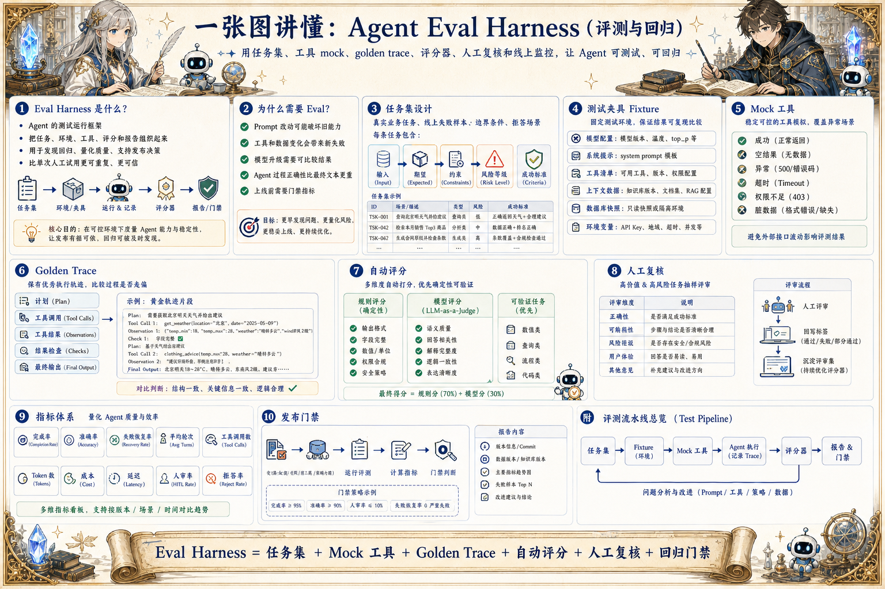
用测试集、工具 mock、golden trace、评分器和人工复核评估 Agent 是否稳定完成任务。
文章待补充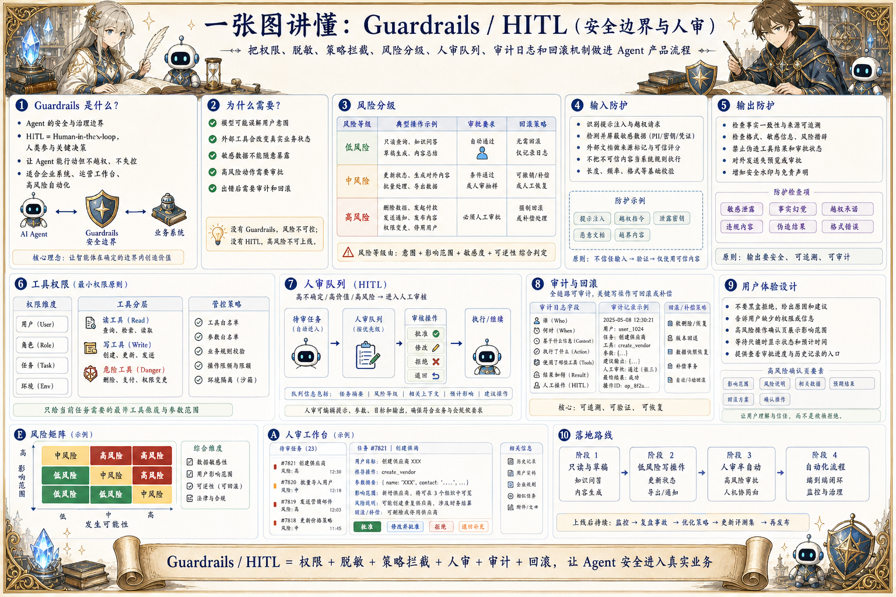
把权限、脱敏、危险动作拦截、风险分级、人审节点和审计日志做进产品流程。
文章待补充